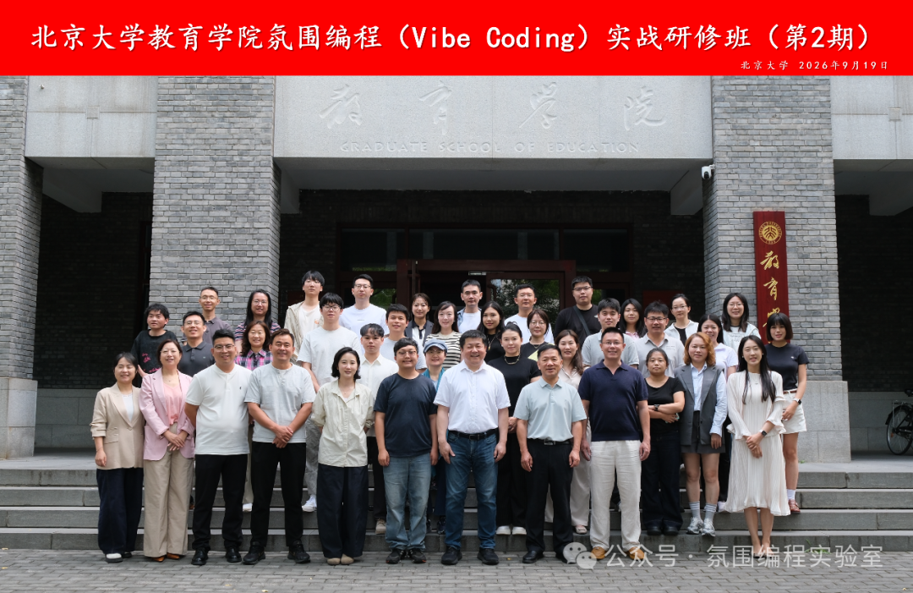

氛围编程实战研修班(第2期)成功举行
9 月 19—20 日 · 北京大学教育学院 · 37 位跨领域学员 来自教育、科研、政务、企业的学员们,在两天实战中完成从「用 AI 聊天」到「用 AI 做事」的思维跃迁。

研修班延续「零门槛、任务驱动、成果导向」的课程理念。学员无需编程基础,全程用自然语言与 AI 协作,在真实任务中掌握人机协同的工作方法。
两天,37 人,4 类真实成果,0 行代码门槛。
01 · 用学习科学设计教学游戏
第一天上午,刘雨昕老师从人工智能与学习科学的基础讲起,帮助学员理解氛围编程的核心理念与工作方式。
吴腾腾老师带来「学习科学 × 用 HTML 设计教学游戏」专题,通过「讨论—规划—执行—迭代」四步协作法,以 HTML 形式搭建教育游戏。

做教学游戏不仅要考虑教学目标如何落位,也要让学生愿意参与其中。——学员反馈
02 · 数据分析与可视化实战
第一天下午,学员使用 WorkBuddy 等 AI 工具完成数据清洗、分析与交互式图表生成。工作中的表格、数据和重复任务,被带进课堂成为真实练习材料。

「在教务工作中设计框架,让表格动态更新,记录数据和提取数据的效率大大提高。」——现场反馈
03 · 从素材到一份完整成果
第二天,课程进入综合实战。学员学习从数据采集到成果汇报的完整流程,并尝试多智能体联合工作:不同智能体各司其职,协同完成文章下载、PPT 制作、公文写作和素材生产。
每位学员围绕自己的需求,完成教学游戏、数据分析、品牌海报或 SKILL 工作流,最终汇总为一份数字化学习成果。
04 · 两天之后,学员这样说
- 关于课堂:课程并非单纯理论讲解,实操占比很高,现场可以上手体验 AI 工具。
- 关于方法:对于 Prompt 有了新的理解,可以让 AI 思考解决方案,把大任务分割成小任务。
- 关于突破:即使不用写代码,也可以做出各种小程序。
课程结束,但真实任务中的人机协作才刚刚开始。
关于本篇
- 原文出处:氛围编程实验室 · 活动回顾原文
- 本篇定位:样式模板库同题试排(01 Anthropic 暖色版),非发布稿